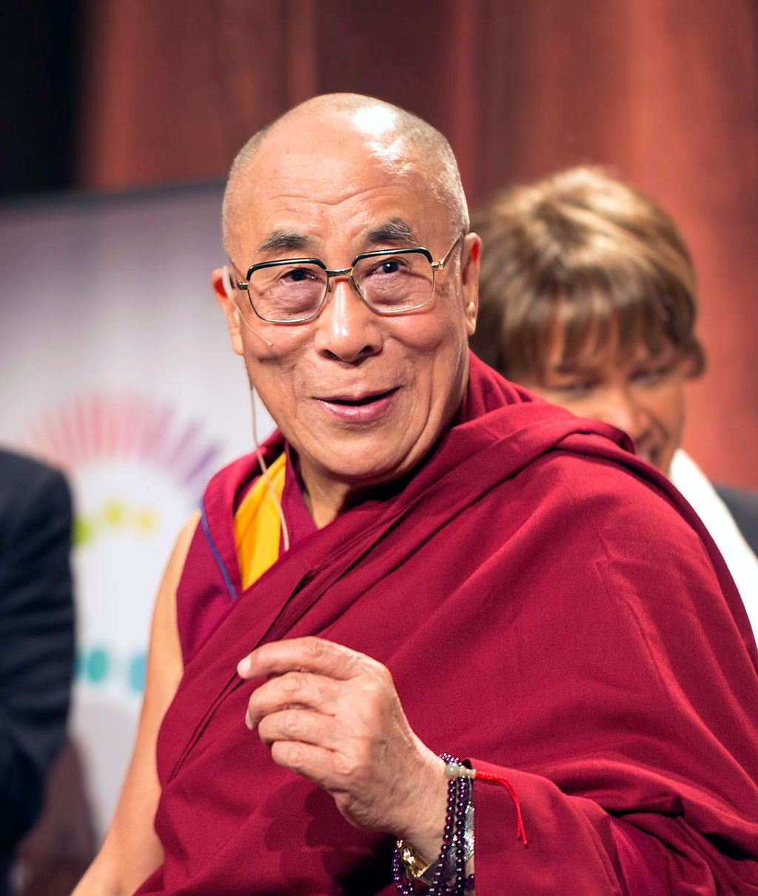

Dalai Lama
ཏཱ་ལའི་བླ་མ་ Spridual Leader of Tibet

14th Dalai Lama, religious name: Tenzin Gyatso
10 Facts about the Dalai Lama
- Who is the Dalai Lama? His Holiness Tenzin Gyatso, serves as the 14th Dalai Lama, the spiritual leader of the people of Tibet. He was born on July 6, 1935 to a peasant farming family in northeastern Tibet.
- What is a Dalai Lama? Each Dalai Lama is a manifestation of the Bodhisattva (Buddha) of Compassion, who are believed to have postponed their nirvana and chosen to be rebirthed in the service of humanity. This Dalai Lama is the 74th manifestation of Avalokiteshvara Bodhisattva, the enlightened Buddha of compassion.
- How did the Dalai Lama become the Dalai Lama? originally born Lhamo Donrub, was recognized as the reincarnation of the 13th Dalai Lama at age two. In order to confirm his identity, Tibetan monks tested Gyatso by asking him to identify certain articles of clothing that belonged to the 13th Dalai Lama. He passed the series of tests, then changed his name, took the throne at age four and became a monk at age six.
- What was he like as a kid? At age five, his Holiness was taken to a monastery in Kumbum, Tibet to begin his monastic training. According to an interview with National Geographic Kids, his favorite game during this time period was playing with two white mice who would sneak into his room and distract him from studying.
- So what’s the big deal about the Dalai Lama? His Holiness won the Nobel Peace Prize in 1989 for his work in advocating for nonviolent means to liberate Tibet from China. He shared this award with Mikhail Gorbachev.
- What does he do for fun? His hobbies include meditating, gardening, and collecting and repairing watches.
- What does the Dalai Lama care about? Known for his charisma and charm, the Dalai Lama is an outspoken international advocate for a variety of issues, a major one being environmental concern. He writes and speaks extensively about the need for a caring attitude toward the environment, the intricate interrelationship between humans and the earth, and the importance of respect for the earth’s living things.
- What else matters to him? Another subject of great importance to the Dalai Lama is peaceful religious coexistence. He believes the world’s religions should have harmonious relationships with each other and engage in meaningful interfaith dialogue.
- Tell me a fun fact about his Holiness.? The Dalai Lama is fascinated by science and has stated that if he had not become a monk, he would have become an engineer.
- Ok, if the Dalai Lama is such an enlightened being, then what is the meaning of life? Dalai Lama’s response was, “to be happy.”
"Happiness is not something ready made. It comes from your own actions."